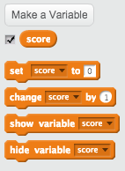
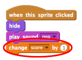

Heads Up!
This project is new. That means we’re still testing it, and there’s a small chance there could be some bugs or typos. If you’re a club leader trying out this project, please complete this short questionnaire (or email ) to let us know how it went!
Note:
The ‘Balloons’ project has been moved to the Additional Scratch Projects section.
Introduction
You are going to make a ghost-catching game!

Step 1: Animating a ghost
Activity Checklist
Start a new Scratch project, and delete the cat sprite so that your project is empty. You can find the online Scratch editor at jumpto.cc/scratch-new.
Add in a new ghost sprite, and a suitable stage backdrop.

Add this code to your ghost, so that it repeatedly appears and disappears:

Test out your ghost’s code, by clicking the green flag.
Save your project
Step 2: Random ghosts
Your ghost is really easy to catch, because it doesn’t move!
Activity Checklist
Instead of staying in the same position, you can let Scratch choose random x and y coordinates instead. Add a
go toblock to your ghost’s code, so that it looks like this:Test our your ghost again, and you should notice that it appears in a different place each time.
Save your project
Challenge: More randomness
Can you make your ghost wait a random amount of time before appearing? Can you use the set size block to make your ghost a random size each time it appears?
Save your project
Step 3: Catching ghosts
Lets allow the player to catch ghosts!
Activity Checklist
To allow the player to catch a ghost, add this code:
Test out your project. Can you catch ghosts as they appear? If you find it difficult to catch the ghosts, you can play the game in fullscreen mode by clicking this button:

Challenge: Adding a sound
Can you make a sound each time a ghost is caught?
Save your project
Step 4: Adding a score
Let’s make things more interesting by keeping score.
Activity Checklist
To keep the player’s score, you need a place to put it. A variable is a place to store data that can change, like a score.
To create a new variable, click on the ‘Scripts’ tab, select
Dataand then click ‘Make a Variable’.Type ‘score’ as the name of the variable, make sure that it is available for all sprites, and click ‘OK’ to create it. You’ll then see lots of code blocks that can be used with your
scorevariable.
You’ll also see the score in the top-left of the stage.
When a new game is started (by clicking the flag), you should set the player’s score to 0:
Whenever a ghost is caught, you need to add 1 to the player’s score:

Run your program again and catch some ghosts. Does your score change?
Save your project
Step 5: Adding a timer
You can make your game more interesting, by only giving your player 10 seconds to catch as many ghosts as possible.
Activity Checklist
You can use another variable to store the remaining time left. Click on the stage, and create a new variable called ‘time’:
This is how the timer should work:
- The timer should start at 10 seconds;
- The timer should count down every second;
- The game should stop when the timer gets to 0.
Here’s the code to do this, which you can add to your stage:
This is how you add the
repeat untiltime= 0code:
Drag your ‘time’ variable display to the right side of the stage. You can also right-click on the variable display and choose ‘large readout’ to change how the time is displayed.
Ask a friend to test your game. How many points can they score? If your game is too easy, you can:
- Give the player less time;
- Make the ghosts appear less often;
- Make the ghosts smaller.
Test your game a few times until you’re happy that it’s the right level of difficulty.
Save your project
Challenge: More objects
Can you add in other objects to your game?
You’ll need to think about the objects you’re adding. Think about:
- How big is it?
- Will it appear more or less often than the ghosts?
- What will it look/sound like when it has been caught?
- How many points will you score (or lose) for catching it?
If you need help adding another object, you can reuse the steps above!